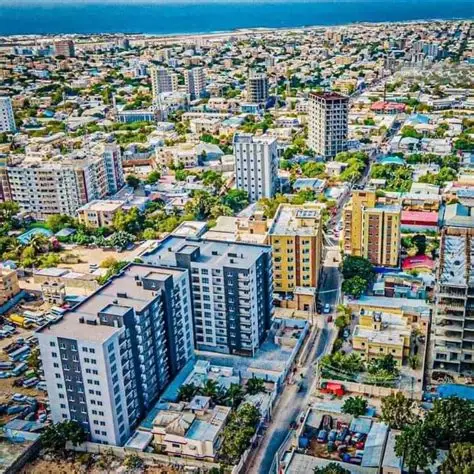
Mogadishu
A powerful coastal capital rich in history, commerce, and sea views.
Explore vibrant cities, serene beaches, historic rivers, lush forests, and dramatic mountain ranges across the country.

A powerful coastal capital rich in history, commerce, and sea views.
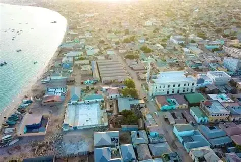
A lively city known for its warm culture, markets, and growing tourism scene.
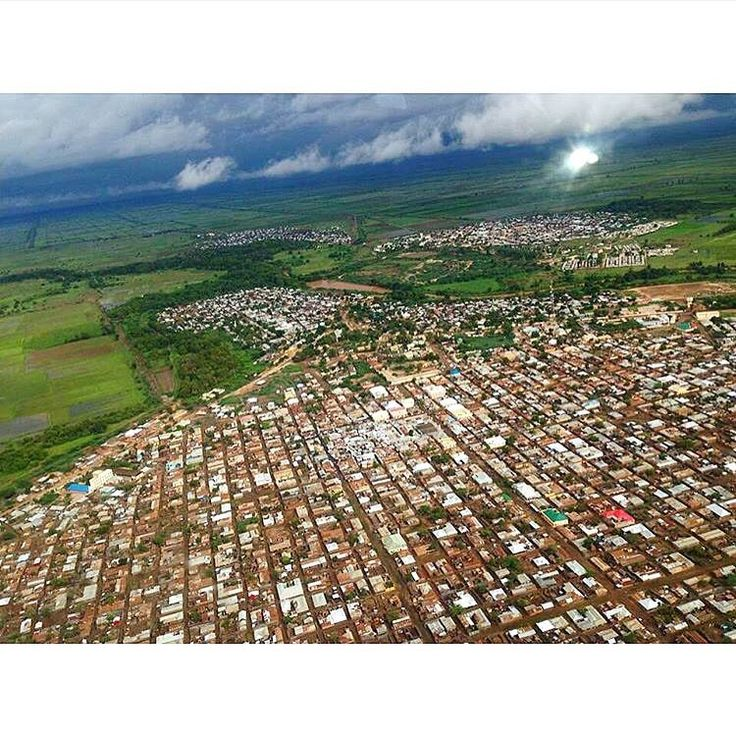
A historic city with a rich cultural heritage and beautiful river views.
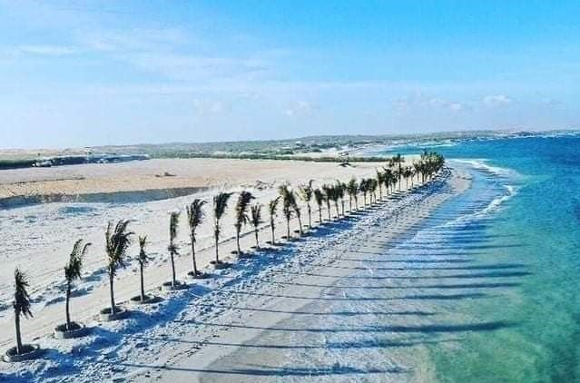
The coastline offers soft sands, clear water, and peaceful evenings by the sea.
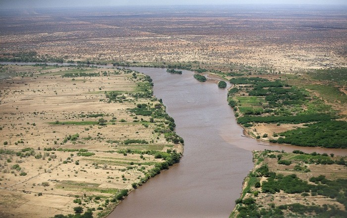
One of the country's most important rivers, supporting life and scenic travel.
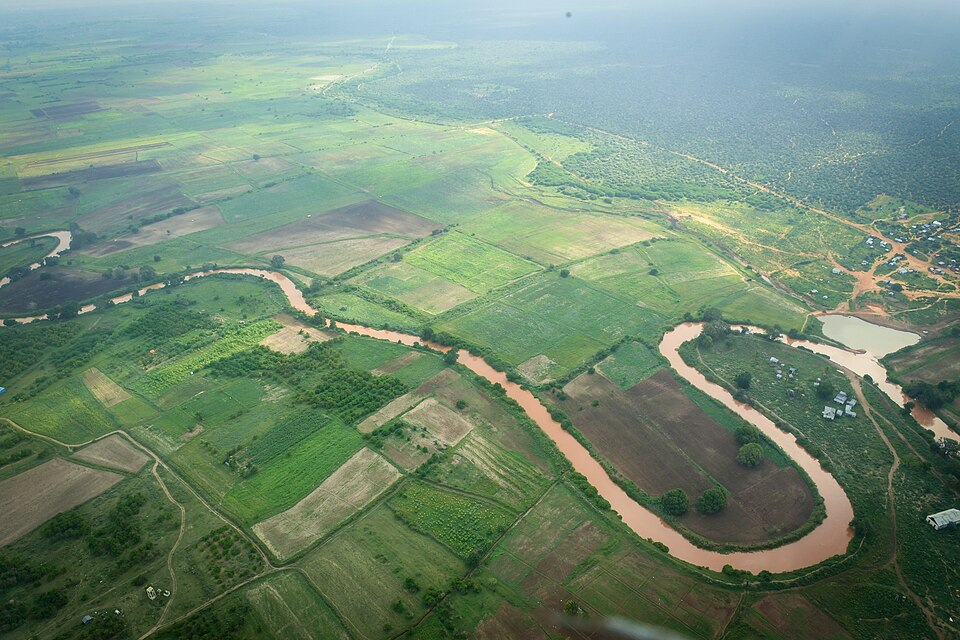
Known for its fertile surroundings and its role in local agriculture and heritage.
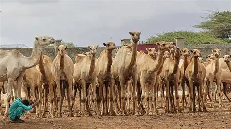
Experience the deep connection between communities and their livestock traditions.
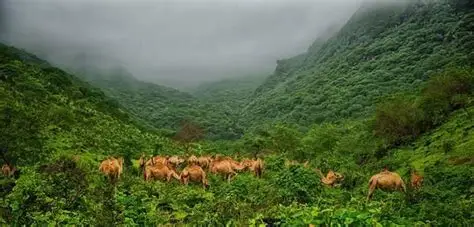
Find shaded trails, biodiversity, and quiet natural spaces in the forested regions.
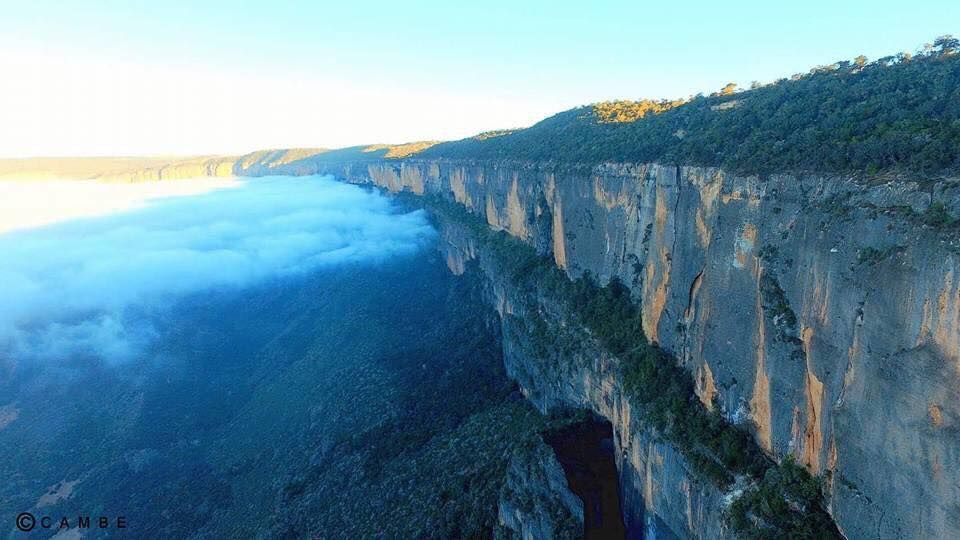
Venture into highland areas where the air is cool and the views are dramatic.
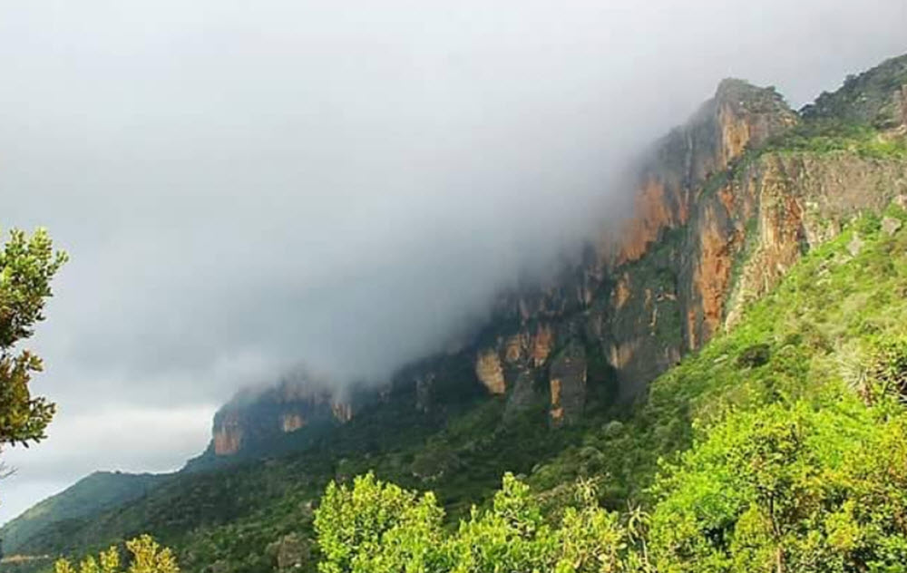
Discover hiking routes that reveal breathtaking views and local stories.
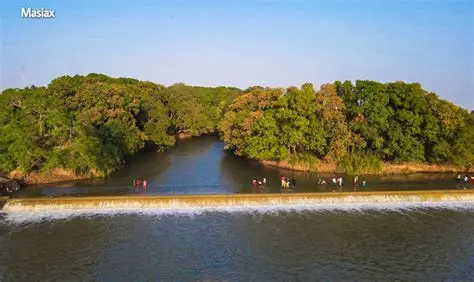
A man-made waterfall on the Shabelle River in Jowhar, attracting thousands of tourists with its beautiful views.